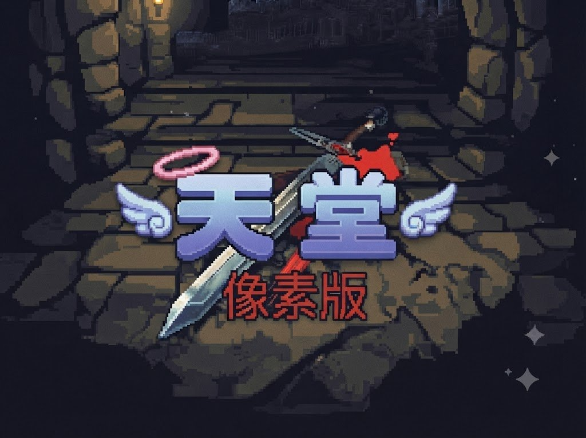

點擊任意處繼續
PC模式
手遊模式
Safety Zone
擊殺數 0/100
說話之島村
LEV: 1
0.0000%
🛡️
0
🎩
0
🎒
0%
🍖
0%
🌀
Neutral
0
☀️
HP 100/100
MP 50/50
頻道
中/EN
送出
F1
F2
F3
F4
🧍
✝️
🎒
👥
🗺️
💡
⚙️
🚪
設定
✕
視窗大小
1920×1080
800×600
全螢幕
日夜設定
夜間
永晝
自動鎖定怪物(PC)
開啟
關閉
擊殺經驗倍率
▼
▲
金幣獲得倍率
▼
▲
強化角色
✕
可分配點數：
0
取消
確認
選單
✕
重新開始
離開
取消
背包
✕
點一下查看，雙擊使用/裝備
負重 6/40
0
🗑
魔法 (Ctrl+S)
✕
說話之島的卷軸
✕
社交
✕
隊友
寵物
隊伍：
1
/ 8
解散隊伍
集火攻擊
自由狩獵
確定要放生嗎？
確定放生
取消
寵物資訊
關閉
隊友資訊
關閉
狀態
裝備
ATS設定
角色資訊 (Ctrl+A)
✕
商店
關閉
購買
販售
購買
販售
合計
：
0
/
0
購買
取消
⚡ SUPER ATS
關閉
ATS
AT強化
變形卷軸
關閉
史萊姆競技場
關閉
交易
關閉
從背包把物品拖到格子裡，最多 24 件
確定
取消
🧰 矮人倉庫
關閉
要存入，還是要取出呢？
存入物品
取出物品
存入
取出
Total：
0
確定
取消
🐾 寵物寄放處
關閉
只可以存放狼與狗，每次領出收費 70 金幣。
🔍 鑑定結果
關閉
🎁 皮賽爾（畢克斯商人）
關閉
說話之島 · 地圖
✕
要結束遊戲嗎？
進度會自動保存。
重新開始
取消
要丟棄這個物品嗎？
數量
▼
▲
全部
數量在 1 的時候，按左邊的 ▼ 會直接變成全部數量
確定丟棄
取消
天堂 · 像素版
📜 公告
◆ 2026-08-28
目前暫時停更，鑑於要往獨立遊戲發展，需要換個方向製作，改風格，避免遭到侵權風波，感謝前陣子大家的支持，後續有更新，會再到獨立遊戲版發佈。
◆ v79（2026-08-26）
說話之島村莊新增NPC
：法林(皮革加工師，可將皮製裝備升級為銀釘系列)、詹森(寵物管理員，可寄放狼與狗，領回時收費70金幣)、多瑪(鐵匠，武器防具修復功能尚未開放)、皮賽爾(畢克斯商人)
商品清單移除「攻X／防X」數值提示
：只留名稱＋價格
新增18項道具
：卷軸4項(祝福/詛咒的對武器/防具施法卷軸)、藥水7項(慎重藥水、萬能藥STR/DEX/CON/INT/WIS/CHA)、道具7項(加速符咒、消耗品袋子、福袋、紅包、老舊獵人的箭桶、老舊皮革的箭桶、變鈍的武器)
祝福／詛咒強化卷軸上線
：祝福卷軸必定強化+1、有機率一次躍升+2或+3且不會摧毀裝備；詛咒卷軸使用後必定將裝備強化等級降低1，同樣不會摧毀裝備
萬能藥／慎重藥水上線
：萬能藥喝下後永久提升對應六圍屬性1點；慎重藥水為魔法師專用，喝下後魔法攻擊傷害+2、持續1200秒
畢克斯的沙漏上線
：使用後獲得AC-3的「畢克斯的祝福」狀態，期間每6分鐘獲得2個畢克斯的羽毛；可連續使用累加時效（10個=10小時）；關閉遊戲畫面時效果會暫停，不會離線流失
畢克斯商人皮賽爾上線
：可用金幣購買畢克斯的沙漏箱(50000金幣/箱，內含3個畢克斯的沙漏)，也可用畢克斯的羽毛兌換稀有裝備與道具
◆ v78（2026-08-25）
小地圖玩家位置即時更新
：小地圖上以紅點標示玩家所在位置，開著小地圖視窗時會每 0.25 秒自動跟著玩家移動更新
魔法師「召喚術」上線
：施放後召喚食人妖精（等級22大型怪物，顯示大小與玩家同高）協助戰鬥，數量依魅力÷3（無條件進位）計算，時效3,600秒，重新施法會先解除舊召喚獸再重新召喚一批；召喚獸可在社交視窗「寵物」分頁查看剩餘時效並提前手動解除
角色不再互相重疊
：玩家、隊友、寵物、召喚獸彼此靠太近時會自動互相推開，多人圍攻同一隻怪也不會擠成一團或穿透彼此
名條/血條顯示改版
：所有角色（含玩家本身）的名字平常不顯示，滑鼠移過去（或手機鎖定目標時）才會浮現；血條改成只有玩家自己、隊友、寵物、召喚獸固定顯示，怪物血條同樣改為hover/鎖定時才顯示，隊友並新增浮動血條；寵物與召喚獸的名條統一改成只顯示名字、字色統一為白色
魔法系統整理
：點魔法格子的說明改成半透明小視窗，樣式跟背包物品說明一致；補上依職業的魔法學習等級限制（魔法師每4級解鎖一階、妖精每8級一階、王族每10級一階、騎士滿50級才能學1階）；成功學會魔法時會有光束特效；商店裡已學會的魔法書/技術書/精靈水晶會蓋上灰暗遮罩避免買重複
重開遊戲改為原地重生
：會記住關遊戲前所在的精確座標，重開後只要進入同一張地圖就會原地重生；只有角色死亡被送回村莊、或存檔沒有座標資料時，才會用地圖原本的出生點
修正聊天氣泡延遲消失
：換地圖時會立刻清空殘留的聊天氣泡，不用等各自的時間到才消失
說話之島村莊新增NPC
：詹姆(魔法師試煉官)、甘特(騎士試煉相關NPC)、拉達(皮革師父)、連(骷髏藝品師父)
道具製作系統上線
：拉達可製作各種皮製防具，連可用皮製裝備＋骨頭碎片製作骷髏系列裝備；製作清單頁改為只顯示圖示＋名稱，點進去才看詳細材料
商店清單／金額校正
：潘朵拉、巴辛改為官方資料的固定販賣清單與金額；吉倫的魔法書售價改為「等級²×100」金幣（一級100／二級400／三級900）
◆ v77（2026-08-24）
假玩家系統上線
——村莊NPC互動買賣、野外洞穴主動組隊狩獵，不搶你的怪
怪物數量大幅提高
——冒險洞穴90隻、野外24隻，怪物追擊改用會找路的移動
魔法欄位改成原版天堂固定格位
——每級固定8格，不再依學習順序排列
修正加速藥水/魔法buff/變身/獵捕效果重開遊戲會消失
——依剩餘時間正確還原
依官方資料全面校正說話之島怪物掉落表
——含原本完全沒掉落的哥布林
掉落訊息改成逐件顯示
，並修正保底補件重複同一品項的問題
修正骷髏槍兵
改為遠距離攻擊，不再貼身近戰
森林守護者（安特/潘）採集機率與掉落訊息調整
修正競技場每次重開遊戲第一場名單都相同
的問題
壓縮檔案、加強畫面縮放穩定性
——檔案從5.05MB縮到3.96MB
◆ v76（2026-08-23）
妖精森林擴建
：地圖從 44×36 放大為
56×50
（與說話之島村莊同尺寸），外圍樹林收成單層。所有 NPC 重新配置到四個象限，東南方草地留給隊友駐守
新增娜魯帕洞穴
：妖精森林中央大樹左側有地下入口，可進入 20×25 的洞穴。娜魯帕搬到洞內工房，還有四位妖精居民在洞裡走動
競技場勝負更有懸念
：每場開賽前每隻史萊姆會隨機決定「當日狀態」，實力最強的也不再穩贏——傳奇「流星」奪冠率約 4 成，最弱的也有機會爆冷
外圍城牆改版
：說話之島村莊、銀騎士村莊、史萊姆競技場的外牆，木樁改為沿著牆的走向排列，整段牆連成直線
倉庫確實跨角色共用
：修正批量存取沒有寫回共用倉庫的問題，現在 9 個存檔格的倉庫互通，可用來在角色之間搬運物品
其他修正：傳送到冒險洞穴會卡在牆縫、娜魯帕的製作清單顯示成別人的、競技場選手名字顏色不一致等問題
◆ v75（2026-08-22）
冒險洞穴大幅擴建
：1樓與2樓從 40×34 放大為
91×91
（面積 6 倍），通道長度約 8 倍。兩層都新增主題房間（礦坑、地底湖、石柱廳、水池房、骷髏房等）。
迷宮版面已固定
，每次登入都是同一張地圖，可以記住路線。傳送過去會直接抵達該層入口
掉落系統大改版
：怪物依等級保底掉落（1-9等至少1件、10-19等2件，每10等再+1），高等怪更有價值。同時補上史萊姆、人形殭屍、杜賓犬、飄浮之眼、野豬原本完全沒有的掉落表
後台掉落機率設定
：每個已勾選的掉落物旁邊可直接修改掉落機率（%），武器、防具、道具、藥水、卷軸、魔法書全部適用
變形卷軸可手動使用
：在背包點擊變形卷軸會跳出變身選單，依怪物等級分組，達到等級即可點名字直接變身，持續20分鐘
妖精屬性魔法
：妖精森林的艾利溫可締結屬性契約（地／水／火／風）。締約後只能學習一般精靈水晶與該屬性的水晶，也可選擇「忘記魔法」重新締約
史萊姆競技場大擴充
：選手增為 20 隻並加上編號（「#18 獵鷹」）。三位妖魔執行者各司其職——阿門售票並在開賽前倒數十秒喊「ＧＯ」、梅格在終點宣布優勝者、葛拉公告賽事資訊。巴風特的傳送魔法陣改開在王房內
新增聊天氣泡
：角色說話時頭上會冒出對話框。競技場有 30 位各種風格 ID 的虛擬玩家，會在場邊走動並成群聊天，同時約 10～15 人在講話
NPC 名條改版
：改成兩行顯示，第一行名字、第二行職稱，例如「艾爾／【倉庫管理員】」
柵欄改版
：圍欄會依相鄰狀況自動連接成直線，轉角形成完整直角
其他：里迪可製作精靈餅乾；修正傳送進洞穴會卡在牆裡的問題
◆ v74（2026-08-21）
新增寵物系統
：吃下「漂浮之眼肉」後 5 分鐘內打倒狼／牧羊犬／杜賓犬即可收服，成功會獲得「項圈」。寵物會跟隨、自動戰鬥、分經驗升級，每隻的力量／體力／敏捷都是捕獲當下隨機決定，同種類資質也不同。可帶數量依魅力計算
寵物管理
：社交視窗新增「隊友／寵物」書籤，可查看寵物數值、改名、放生
新增史萊姆競技場（賭場）
：可從傳送清單前往。20 隻編號選手輪番上陣（顯示為「#18 獵鷹」，含傳奇明星「#1 流星」），每場隨機抽 5 隻，全程約 40 秒可實際觀戰。三位妖魔執行者各司其職：阿門在起點倒數十秒喊「ＧＯ」、梅格在終點宣布優勝者、葛拉在北方公告賽事資訊。阿門同時負責售票（一張 200 金幣）
新增聊天氣泡
：角色說話時頭上會冒出白框透明對話框。競技場有
30 位
各種風格 ID 的虛擬玩家（中二煞氣、台客文青、古風、食物、諧音搞笑等），會在場邊走動並成群聊天，同時約有 10～15 人在講話。虛擬玩家的名字平常隱藏，滑鼠移過去才顯示。玩家自己在聊天欄說話也會冒氣泡
世界王強化
：出招節奏大幅加快（一階段 1 秒、二階段 0.5 秒、狂暴 0.25 秒一招）；王座之間的傳送陣換成全新的惡魔召喚魔法陣，並放大為 2×2 共 4 格
製作視窗改版
：改成兩層式，先看配方清單、點進去才顯示完整材料，畫面不再被擠壓。數量欄兩側有大顆 ▼▲ 按鈕，在 1 時按 ▼ 可直接跳到可製作的最大數量
角色可以改名了
：角色資訊與隊友資訊視窗都能改名，隊友改名會連動更新該角色的存檔
隊友改善
：會跟著你移動到任何村莊並就地駐守；帶隊友打稻草人時隊友也能獲得訓練經驗
回村自動補滿
：回到安全區時，玩家與所有隊友的 HP／MP 直接回滿，倒地的隊友也會復原
新增擊殺計數器
：在北邊／東邊港口、冒險洞穴 2 樓時，畫面上方會顯示「擊殺數 N/100」
介面優化
：物品說明改為浮現在格子旁、點別處自動消失；所有視窗的捲動軸統一為金框質感；ATS 新增自動購買箭矢
其他修正：角色浮空／陷地、被擊倒後仍能使用道具、以及多項顯示問題
◆ v73（2026-08-20）
新增世界王挑戰
：在北邊/東邊港口或冒險洞穴2樓累計擊殺100隻怪物後，地上會出現魔法陣，走進去即可挑戰克特／巴風特的專屬王座之間
世界王二階段變身
：打倒第一階段後，牠會爬起來變身成更強大的型態，真正擊敗二階段才能拿到寶物。挑戰失敗魔法陣會關閉，需重新累積100隻
世界王招式大改版
：不再只會追著你打，會穿插衝刺、震地、劍氣、隕石雨、召喚小怪、傳送突襲、昏吼減速等招式，出招前都有預警動作可以閃避；血量過低會進入狂暴
世界王大幅強化
：血量提升10倍、閃避提高、體型放大2倍、攻擊距離3格、感應範圍15格
隊友AI強化
：會自己在迷宮裡找路繞開牆壁，不會再穿牆、隔牆攻擊或卡住不動
村莊隊友交易
：在村莊裡隊友會固定站在東南方草皮上，走過去點他們可開啟交易視窗，拖入物品最多24件，按確定就送給對方
背包垃圾桶
：右下角新增垃圾桶，賣不掉的物品拖過去即可丟棄
牆壁透明化
：走到牆後被擋住時，該面牆會自動變半透明
怪物分佈復原
：依原始資料重新設定各地圖的怪物出沒，冒險洞穴1-2樓也一併調整
後台強化
：怪物掉落物設定新增「魔法」書籤，可設定掉落魔法書、精靈水晶、技術書等
ESC 關閉視窗
：ESC 可依序關閉開啟中的視窗；全螢幕模式下也不會誤退出全螢幕（需長按 ESC 才會退出，Chrome／Edge 支援）
其他修正：傳送到洞穴2樓卡死、怪物分佈消失、名條血條被擋、樓梯重複觸發、變身選單顯示錯誤等問題
◆ v72（2026-08-19）
遊戲更名為「天堂．像素版」，公告欄改版
修正背包/魔法欄拖曳抖動、登入畫面細線等視覺瑕疵
移動速度全面調整：一般速度、加速藥水倍率、怪物移動速度都重新校準
玩家名條依性向值呈現藍/紅漸層變色
隊伍系統大幅強化：隊友可以升級、有自己的性向與配點，可查看隊友狀態與裝備，可設定隊友的自動喝水/加速/主動技能/被動技能，怪物現在也會攻擊隊友了
新增冒險洞穴5隻怪物：骷髏弓箭手、骷髏斧手、骷髏槍兵、史巴托、巴風特(世界王)
怪物出沒系統改版：所有地圖預設沒有怪物，改由後台「怪物擺放」分頁勾選怪物種類並存檔
冒險洞穴新增2樓
冒險洞穴改造成真正的地牢迷宮：薄石牆＋2格寬通道，怪物隔牆看不到你就不會攻擊；2樓新增巴風特專屬的「王房」（中央有魔法陣），巴風特只會在王房裡活動，不會跑出來
修正怪物斜角移動會切角穿牆的問題；重新設計冒險洞穴的迷宮路線，入口到出口不再是直通捷徑，繞路感明顯提升
冒險洞穴依參考地圖大改版：迷宮改成稀疏蜿蜒的單一長廊風格；1樓入口新增紫色祭壇，路上安插2組可瞬間互通的暗道跟1個通往2樓的隱藏樓梯；2樓新增水池房、骷髏房、夏洛柏房，加上原本的巴風特房共4間主題房間
修正傳送術規則：在冒險洞穴地監內施放，只會在同一層隨機換位置，不會被傳送到野外去
稻草人訓練場的稻草人不再顯示名字標籤
稻草人不再顯示血條，尺寸也調小到跟玩家角色差不多大
修正冒險洞穴每次進去格局都不一樣的問題：迷宮現在只會生成一次，之後每次進去都是同一個版面；後台「怪物擺放」新增按鈕，可以自己選擇重新產生新的迷宮格局
修正從2樓回1樓時沒有從樓梯口出來的問題，現在會準確回到原本下樓的那個位置
修正2樓入口卡住回不了1樓的問題（瀏覽器裡存的舊版地城版面快取已自動失效，重新整理就會用新版本重新生成）
踩到暗道／樓梯時不再跳文字訊息到聊天頻道，只保留傳送特效
登入
您好，這裡是天堂．像素版
誠摯歡迎各位勇士來到亞丁世界
Account
Password
登 入
退 出
🛠️ 後台編輯器
🛠️ 後台編輯器
↺ 重置本頁
關閉
村莊NPC
武器
防具
道具
魔法
怪物
怪物擺放
‹
1 / 3
›
角色名稱
—
所屬勢力
—
職業身分
—
陣營性向
—
生命值 (HP)
—
法力值 (MP)
—
防禦力 (AC)
—
當前等級
—
力量 (STR)
—
敏捷 (DEX)
—
體質 (CON)
—
精神 (WIS)
—
魅力 (CHA)
—
智力 (INT)
—
OK
Cancel
Delete
請選擇職業
點選人物四周的圖示選擇職業：
左上 👑 皇冠＝王族 左下 🛡 盔甲＝騎士
右上 🕊 翅膀＝妖精 右下 🕯 蠟燭＝法師
王族
騎士
妖精
法師
Remaining Points
Strength
-
▲
▼
Dexterity
-
▲
▼
Constitution
-
▲
▼
-
🎲
▲
▼
-
Wisdom
▲
▼
-
Charisma
▲
▼
-
Intelligence
性別：
♂ 男性
♀ 女性
Character Name ：
ok
cancel
📱
繼續 ▶
略過開場
角色
背包
魔法
社群
地圖
行動
設定
結束
▲
◀
▶
▼
F1
F2
F3
F4
F5
F6
F7
F8
F9
F10
F11
F12
🖱攻擊
停攻
✔ 確認
雙擊